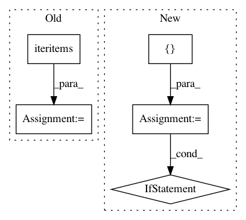

63ef8bfa3b63090437bd27bf1e04db7ae1eae3cf,nilmtk/stats/totalenergy.py,,get_total_energy,#Any#Any#,39
Before Change
energy = {}
data_source_rank = {} // overwrite Power with Energy with Energy(cumulative)
for (physical_quantity, ac_type), series in df.iteritems():
if physical_quantity == "power":
// Preference is to calculate energy from
// native Energy data rather than Power data
// so don"t overwrite with Power data.
if not energy.has_key(ac_type):
energy[ac_type] = _energy_for_power_series(
series, max_sample_period)
data_source_rank[ac_type] = 3 // least favourite
elif physical_quantity == "cumulative energy":
energy[ac_type] = series.iloc[-1] - series.iloc[0]
data_source_rank[ac_type] = 1 // favourite
elif (physical_quantity == "energy" and
data_source_rank.get(ac_type, 3) > 2):
energy[ac_type] = series.sum()
data_source_rank[ac_type] = 2
return energy
def _energy_for_power_series(series, max_sample_period):
After Change
// Select a column based on ordered preferences
PHYSICAL_QUANTITY_PREFS = ["cumulative energy", "energy", "power"]
selected_columns = []
for ac_type in AC_TYPES:
physical_quantities = [physical_quantity
for (physical_quantity, col_ac_type) in df.keys()
if col_ac_type == ac_type]
for pq in PHYSICAL_QUANTITY_PREFS:
if pq in physical_quantities:
selected_columns.append((pq, ac_type))
break
energy = {}
for col in selected_columns:
print("Calculating energy for column", col)
(physical_quantity, ac_type) = col
In pattern: SUPERPATTERN
Frequency: 3
Non-data size: 5
Instances
Project Name: nilmtk/nilmtk
Commit Name: 63ef8bfa3b63090437bd27bf1e04db7ae1eae3cf
Time: 2014-11-27
Author: jack-list@xlk.org.uk
File Name: nilmtk/stats/totalenergy.py
Class Name:
Method Name: get_total_energy
Project Name: deepchem/deepchem
Commit Name: 86328d567ff862262e0da70d0ebc9d90b407e03a
Time: 2017-11-29
Author: peastman@stanford.edu
File Name: deepchem/models/tensorgraph/tensor_graph.py
Class Name: TensorGraph
Method Name: predict_on_generator
Project Name: Theano/Theano
Commit Name: 24e7ed3b8f62fd702b2fea624189f93d145ad8b5
Time: 2017-05-30
Author: nouiz@nouiz.org
File Name: theano/gof/fg.py
Class Name: FunctionGraph
Method Name: orderings